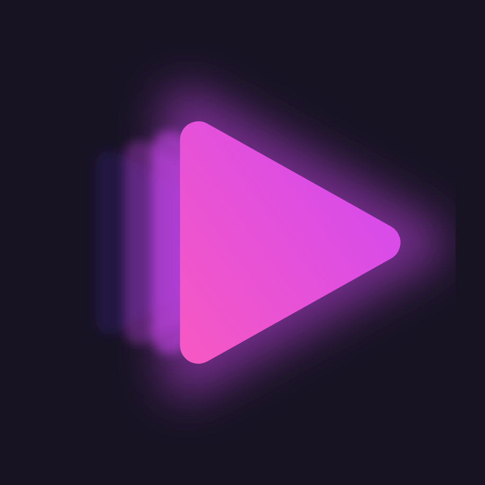
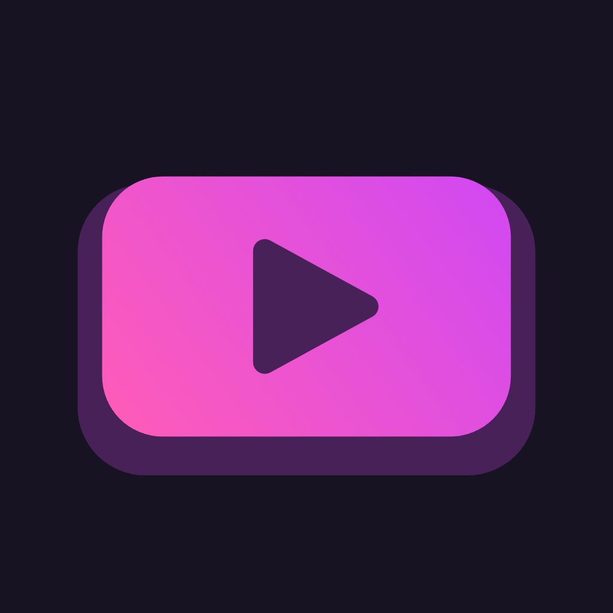
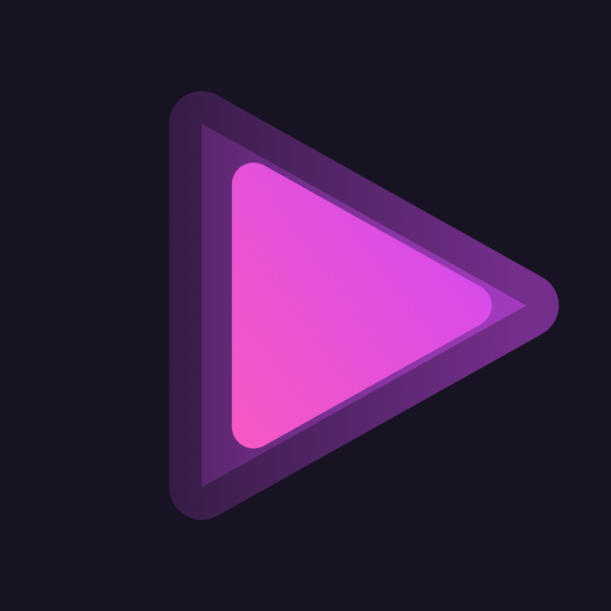

Final mark (N4)
Triangle + ONE hard echo + radial glow disc (vector gradient). Not a stock play button, not a screen.
Does it survive size and blur? (rendered, not claimed)

96
48
24 (small mark: no glow, echo as one plain triangle)
64 + blur (across the room)
lockup: air 500 at 78% + glow 700
Candidates tried, 1024 px renders in tests/

M1 v5 baseline
blur filters, mush at 24
blur filters, mush at 24

M2 screen + play
YouTube silhouette
YouTube silhouette
M5 screen + echo
same, plus smudge
same, plus smudge
M4 glow triangle
edges read as bars
edges read as bars

N2 spill plate
bar again at 48
bar again at 48
N3 radial glow
best glow, no echo
best glow, no echo
N4 chosen N3 + 1 echo
clean at 24, one hard cue
clean at 24, one hard cue